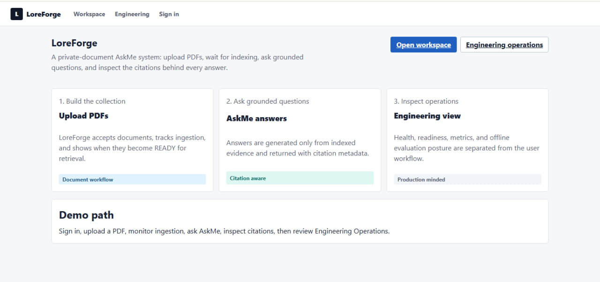

Document intelligence · Live demo
LoreForge
Find answers in private documents and follow each answer back to its sources.
Hybrid semantic and keyword search, reranking, citation validation, and owner-scoped queries behind a FastAPI service and React interface.
Inside the build
Semantic search and BM25 are fused with Reciprocal Rank Fusion before reranking. Provider boundaries separate retrieval and generation. The repository documents evaluation methods, upload/indexing boundaries, and remaining storage work.
Demo access
Open the live app and use loreforge-demo-2026 to explore the shared demo workspace.